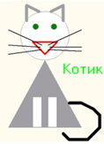
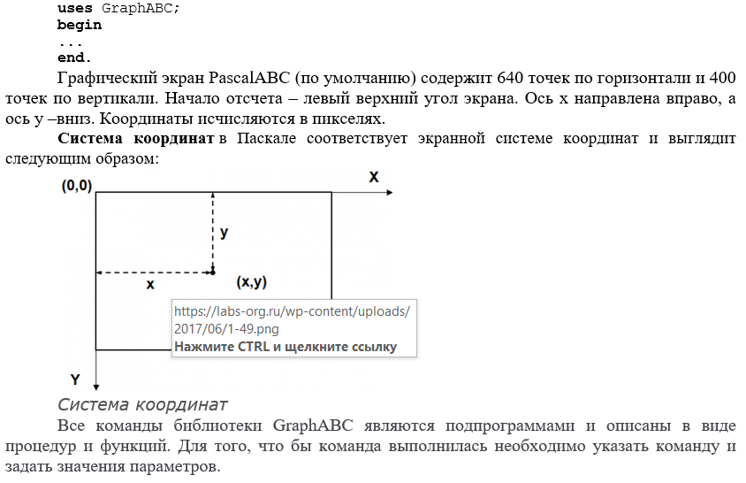
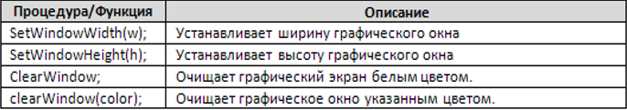
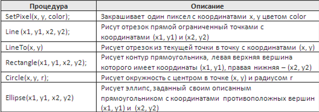
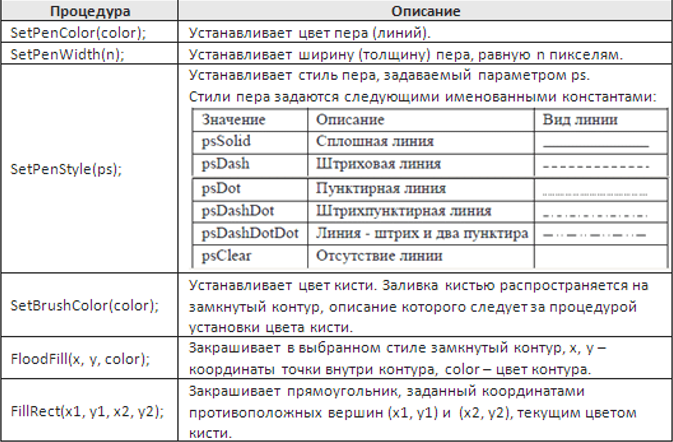
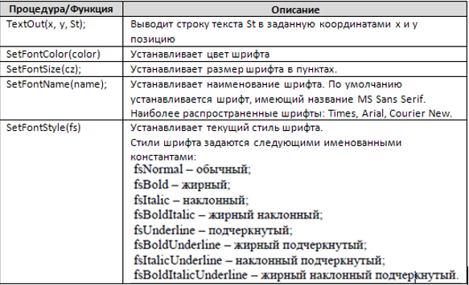
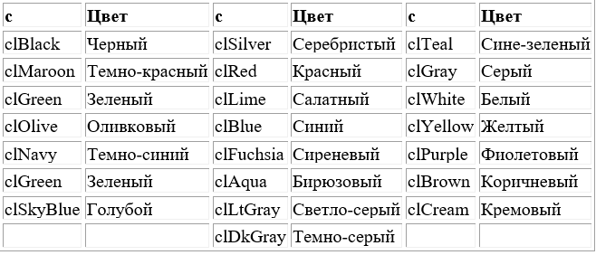
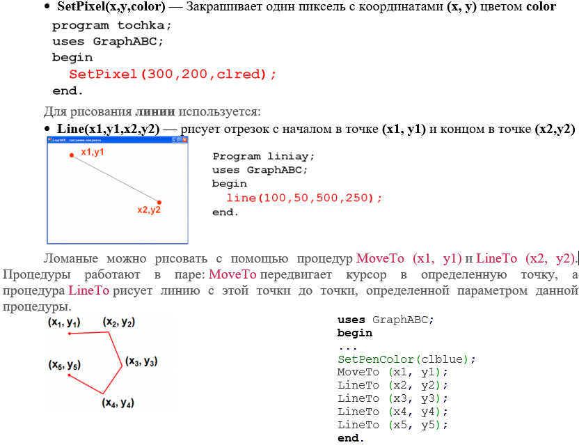
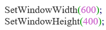
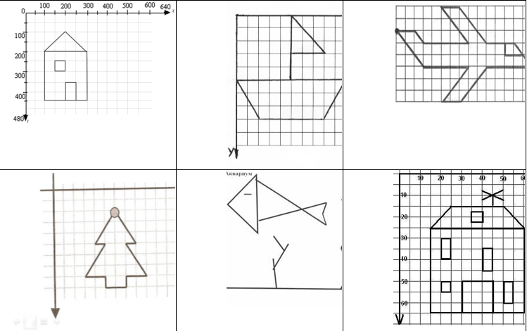

Задания для 1 курса. Практическое занятие №19
Работа с графикой в PascalABC
 Графика является довольно интересной областью программирования и те знания, которые вы сегодня получите, понадобятся вам не только при выполнении контрольной работы, но и пригодятся вам при выборе профессии.После запуска PascalABC, по умолчанию, запускается текстовый режим. Для работы с графикой служит отдельное графическое окно. Чтобы его открыть, необходимо подключить модуль GraphABC. В этом модуле содержится набор процедур и функций, предназначенных для работы с графическим экраном, а также некоторые встроенные константы и переменные, которые могут быть использованы в программах с графикой. С их помощью можно создавать разнообразные графические изображения и сопровождать их текстовыми надписями. Подключение осуществляется в разделе описаний.Формат подключения модуля GraphABC: Uses GraphABC;  Управление графическим окном:  Процедуры рисования графических примитивов  Процедуры, используемые для работы с цветом:  Процедуры для работы с текстом  Цвета в PascalABC:  ТОЧКИ, ОТРЕЗКИ И ЛОМАНЫЕ Для отображения точки в паскале используется процедура:  Задание 0: При помощи операторов SetPenColor(), LineTo (x2, y2) и MoveTo (x1, y1) нарисовать квадрат и равносторонний треугольник. Для установки размеров графического окна используется процедура SetWindowSize(ширина, высота) или, например:  Задания:Рисование Линий и Ломанных линий Составить программы к следующим рисункам  |